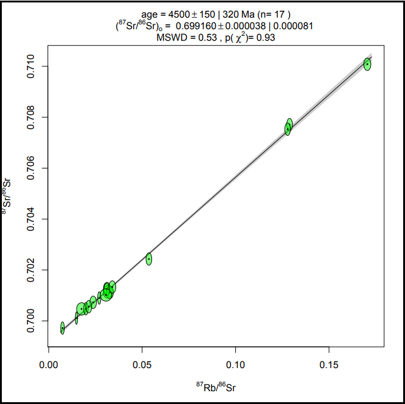

|

|
IsoplotR
is a free and open substitute for Kenneth Ludwig's popular
Isoplot add-in to Microsoft Excel. The program includes functions for
U-Pb, Pb-Pb, 40Ar/39Ar, Rb-Sr, Sm-Nd,
Lu-Hf, Re-Os, U-Th-He, fission track and U-series disequilibrium dating.
IsoplotR is programmed in R and can be run (1) online,
via a Graphical User Interface (GUI) that runs in a
web browser on any internet-connected device; (2) offline,
natively running the GUI on any computer that has R
installed on it; and (3) from the command line, which allows
IsoplotR to be extended and incorporated into automation scripts.
|
| |
|
|
CosmoCalc is an Excel add-in (.xla)
for cosmogenic nuclide calculations. The program scales production rates for
10Be, 26Al, 21Ne, 3He and 14C
within a self-consistent framework of calibration sites; calculates exposure ages,
erosion rates and burial ages; includes a forward modelling calculator,
and generates 21Ne/10Be and 26Al/10Be
two-nuclide diagrams.
|
| |
|
|
RadialPlotter is a user-friendly application for generating radial plots.
It has the following advantages over existing programs such as Trackkey or MacTrack.
(1) The main purpose of the program is to produce radial plots. Therefore, radial plot
functions are not buried deep inside the menu structure and the interface is very straightforward.
(2) RadialPlotter was written in Java (version 6) and is, therefore, perfectly platform independent.
(3) In addition to fission track radial plots, RadialPlotter also offers the possibility to generate
radial plots for luminescence dating, or any other kind of data such as (U-Th)/He or U-Pb ages.
|
| |
|
|
DensityPlotter
produces publication-ready kernel density estimates, probability density plots, histograms,
radial plots and mixture models of (detrital) age distributions. The program is based on,
and in fact offers exactly the same functionality as RadialPlotter
albeit with a different set of pre-loaded preferences.
|
| |
|
|
HelioPlot implements the following functionality.
(1) Plots (U-Th)/He and (U-Th-Sm)/He data on ternary diagrams and logratio plots.
(2) Calculates central ages, which are the most accurate estimators of average age.
(3) Computes 95% confidence intervals using a deterministic Bayesian algorithm.
(4) Calculates MSWDs indicating goodness of fit by a single logistic normal population.
(5) Saves the output in image (.png) or vector (.pdf) formats.
|
|
| |
|
|
provenance
is an R package for statistical provenance analysis, which
includes functionality for adaptive kernel density
estimation, multidimensional scaling (MDS), generalised procrustes analysis
and individual differences scaling of distributional (e.g., zircon U-Pb ages)
and compositional (e.g., heavy mineral) datasets using a variety of
dissimilarity measures. Also included are tools to plot
compositional data on ternary diagrams, to
calculate the sample size required for specified levels of statistical
precision, and to assess the effects of hydraulic sorting on detrital
compositions. Alternatively,
MuDiSc is a Matlab GUI for MDS analysis of distributional
datasets only.
|
| |
|
|
resochronometer
is a Javascript based web-application for in-situ U-Th-He geochronology
that can be run both on- and offline. It implements two algorithms:
(1) an 'absolute' dating method that uses the U, Th, (Sm, ) and He concentrations
in moles per unit volume; and (2) a 'pairwise' dating method that ties the
relative amounts of U, Th, (Sm, ) and He for the sample to those of a
standard of known U-Th-(Sm-)He age. The standard measurements are grouped
in a κ calibration constant, as described by Evans et al. (JAAMS, 2015).
|
| |
 |
geochron@home
is a crowd-sourcing app for fission track dating. It can be run in a
web browser, on your computer, tablet or smartphone. It is based on
the notion that human observers are better at pattern recognition than
computers, and that groups of human observers are better at counting
items than individual observers. Please give the app a spin and if you
register with your email address (optional), we will notify you of and
acknowledge you in any publication resulting from your work. |